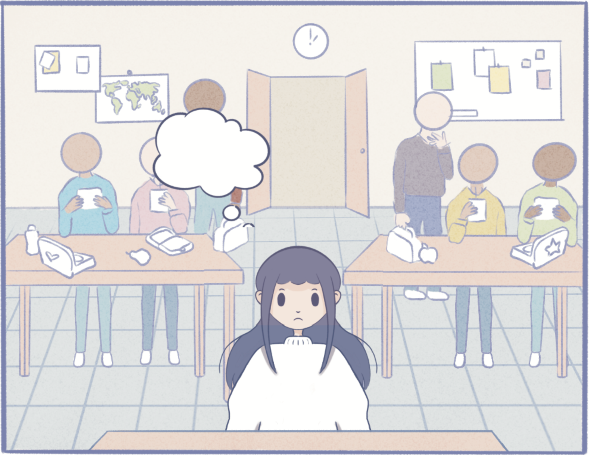
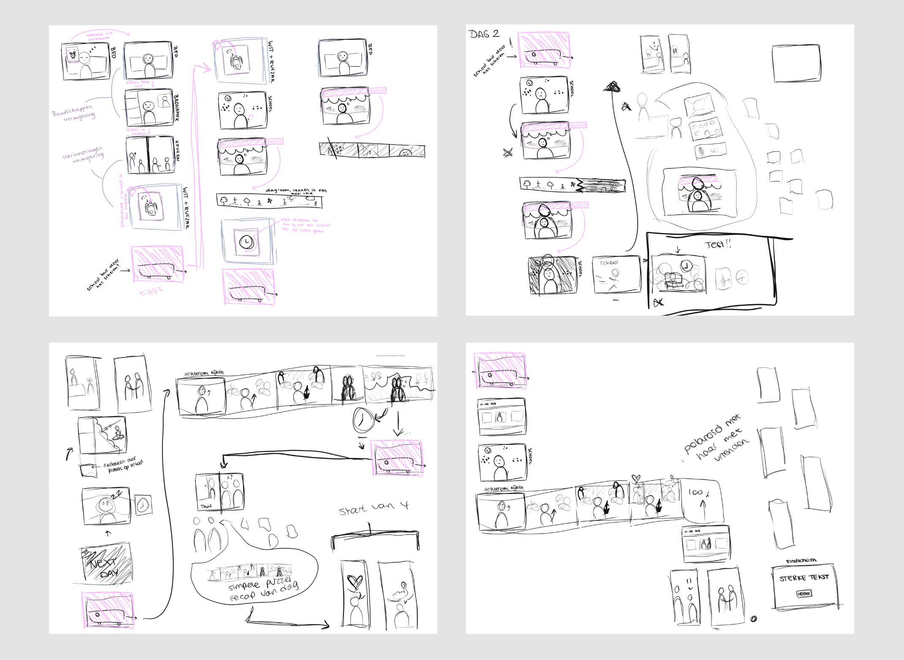
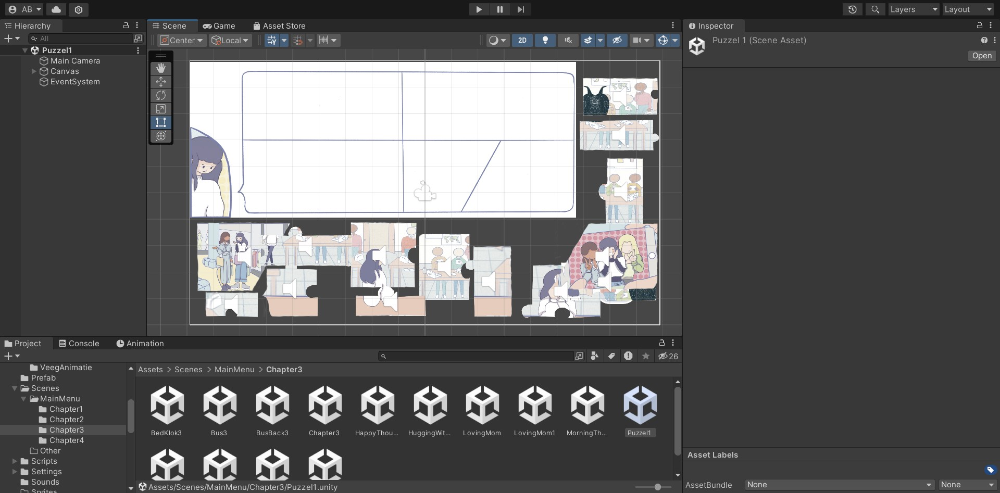
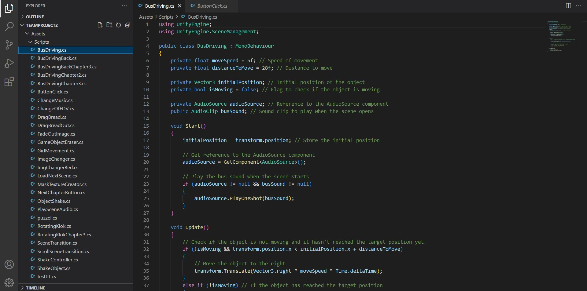

Periode
April/mei 2024
Skills
- ● Unity
- ● Game Design
- ● C#
- ● Storytelling
- ● Teamwork
Opdracht & beschrijving
Voor de minor Applied Game Design kreeg ik de opdracht om in een team een game te maken voor jongeren tussen de 14 - 18 jaar over een cautianary tale, op basis van een Grimm sprookje. De duur van het project was vier weken. Als team hadden wij ervoor gekozen om een interactieve comic te maken op basis van Rapunzel/Raponsje. Het thema van onze game gaat over mental health en over het stappen uit je eigen hoofd om de echte wereld te ontdekken.
Mijn rol in het team: Game design & development.
Concept
Om ons verhaal zo goed mogelijk over te brengen, hebben wij ervoor gekozen om een visual novel te maken. Het verhaal gaat over een meisje dat opgesloten zit in haar hoofd. Haar gedachten brengen haar naar mooie plekken, maar nemen haar ook mee naar minder mooie plekken. Ze komt erachter dat er buiten haar hoofd ook een wereld is, met veel mensen en sociale interacties. Ze begint hier steeds meer naar te verlangen en gaat de tweestrijd aan met haar gedachten om volledig uit haar hoofd te stappen en aan de echte wereld deel te nemen. We hebben ervoor gekozen om geen tekst te gebruiken in de game, zodat de speler grotendeels zelf het verhaal kan vormen.
Visuele stijl
Als visuele stijl hebben wij ervoor gekozen om een redelijk simpele, niet al te gedetailleerde artstijl aan te houden. Ondanks dat het onderwerp best wel dark is, hebben we de stijl niet heel duister gemaakt en pastelkleurtjes gebruikt. Uit testen bleek dat dit als fijner werd ervaren. De doelgroep kan op deze manier het onderwerp makkelijker verwerken.

Storyboards
We hebben uiteindelijk vier chapters uitgewerkt. Deze hebben wij zorgvuldig uitgedacht en visueel gemaakt in storyboards.
Development
De game is door mij en een ander teamlid gebouwd in Unity. Hierbij hebben wij gecodeerd met C#. Het type game dat wij hebben gemaakt is een interactieve visual novel, zonder tekst. In de game zitten kleine interacties zoals onder andere, slepen, klikken, scrollen en puzzelen.
 